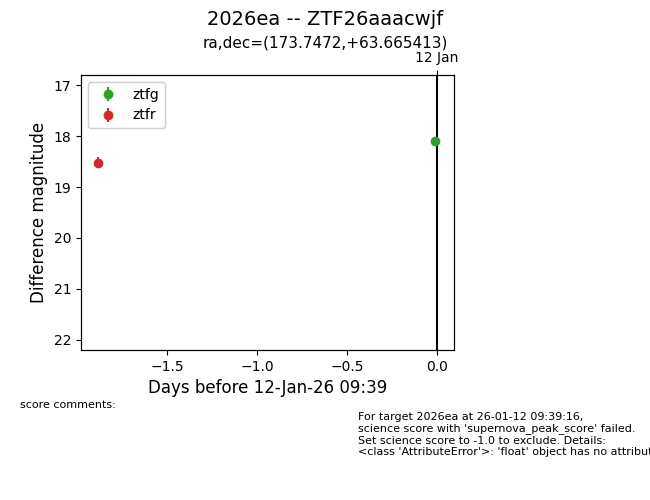
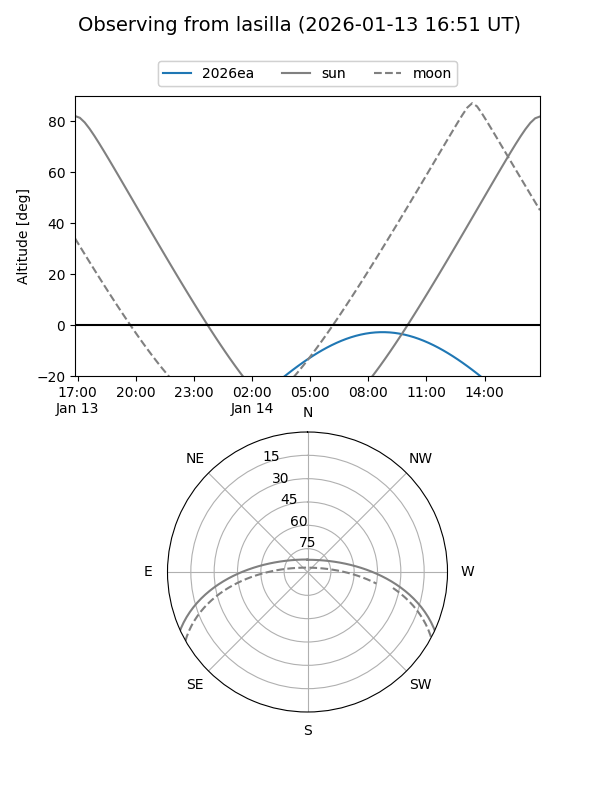
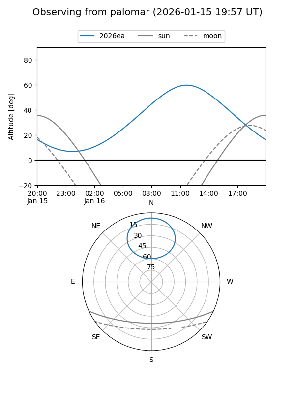
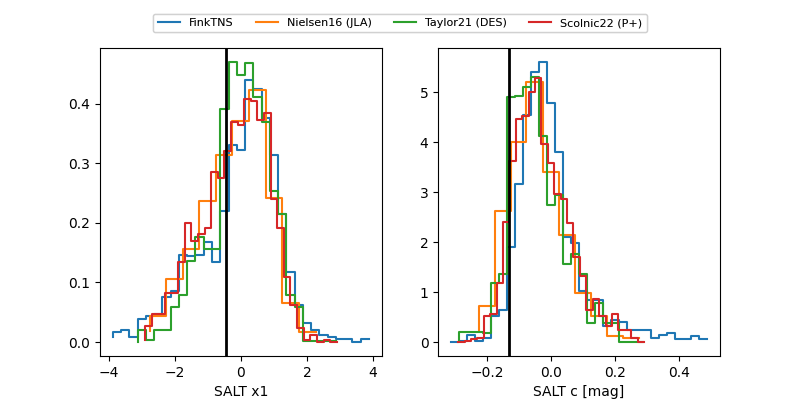

2026ea
Target 2026ea at 2026-01-23 13:41
Aliases and brokers:
FINK: link
Lasair: link
ALeRCE: link
TNS: link
YSE: link
alt names
ZTF26aaacwjf (ztf,fink_ztf)
2026ea (tns,yse)
ATLAS26agp (atlas)
Coordinates:
equatorial (ra, dec) = 173.7472,+63.66541
equatorial (HMS+DMS) = 11:34:59.32,+63:39:55.49
galactic (l, b) = (136.3999,+51.41727)
Flags:
confirmed ia
Photometry:
last atlasc=18.04, atlaso=18.32, ztfg=18.03, ztfr=18.16
1 atlasc, 4 atlaso, 5 ztfg, 6 ztfr detections
Lightcurve

Visibility


Additional plots
